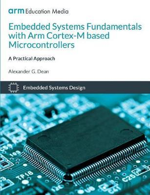
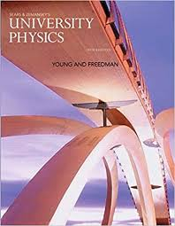
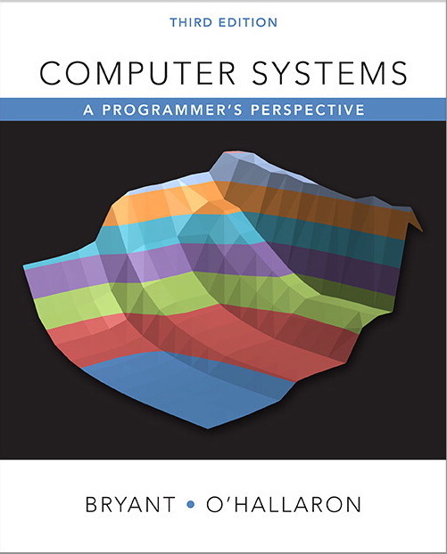
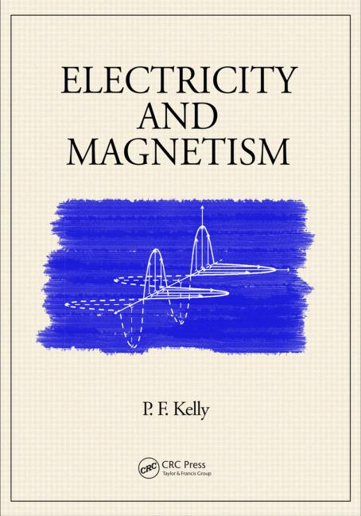
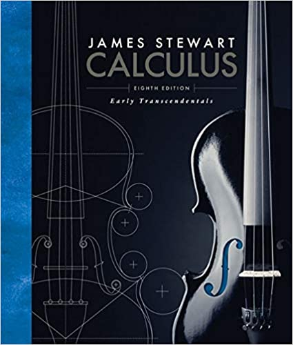

|
18-100 Introduction to Electrical and Computer Engineering
TA | Fall 2021 - Fall 2022
I taught recitation, held office hours and small groups, and wrote exam and homework problems on a variety of concepts including digital logic, transistors, op amps, signal processing and filters, and machine learning.
|
 |
TA | Spring 2021
I taught recitation, held office hours, and wrote exam and homework problems on various ML concepts, including regression and optimization, deep learning, reinforcement learning, graphical models and learning theory.
|
|  |
18-349 Introduction to Embedded Systems
TA | Fall 2020
I held weekly small group sessions and office hours teaching fundamental concepts in embedded systems including ARM Thumbv2, serial protocols, timers and interrupts, threading and scheduling, networking, and security
|
|  |
33-141 Physics I for Engineering Students
SI Leader | Fall 2019
I organized and led biweekly sessions of 30+ students, as well as several exam review of 100+ students to review lecture material on kinematics, mechanics, energy and momentum, and thermodynamics. I also wrote and prepared problem sets and solutions for each session and exam review.
|
|  |
TA | Summer 2019
I led lecture activities and held office hours on content covering system-level I/O, network protocols, bit-level representations, x86-64 programming, exceptional control flow (processes and signals), virtual memory, and caching. I also developed and benchmarked test traces to stress students' implementations of malloc memory allocator.
|
|  |
33-142 Physics II for Engineering Students
EXCEL Leader | Spring 2019
I organized and led 3 weekly sessions of 9-10 students, covering material on electric fields, Gauss' law, magnetism, electromagnetic induction, and Maxwell's Equations. I also wrote and prepared problem sets for each session, and co-developed and co-led multiple exam reviews with 100+ students.
|
|  |
21-259 Calculus in Three Dimensions
EXCEL Leader | Fall 2019
I organized and led 3 weekly sessions of 9-10 students, covering material on multivariable limits, differentiation, integration, surface and line integrals, and Stoke's and Divergence Theorems. I also wrote and prepared problem sets for each session, and led 3 exam reviews with up to 30 students.
|
|
33-141 Physics I for Engineering Students
TAA | Fall 2019
I co-led biweekly recitations for 25+ undergraduate students, providing support on concepts including kinematics, mechanics, energy and momentum, and thermodynamics
|


{kind=link}